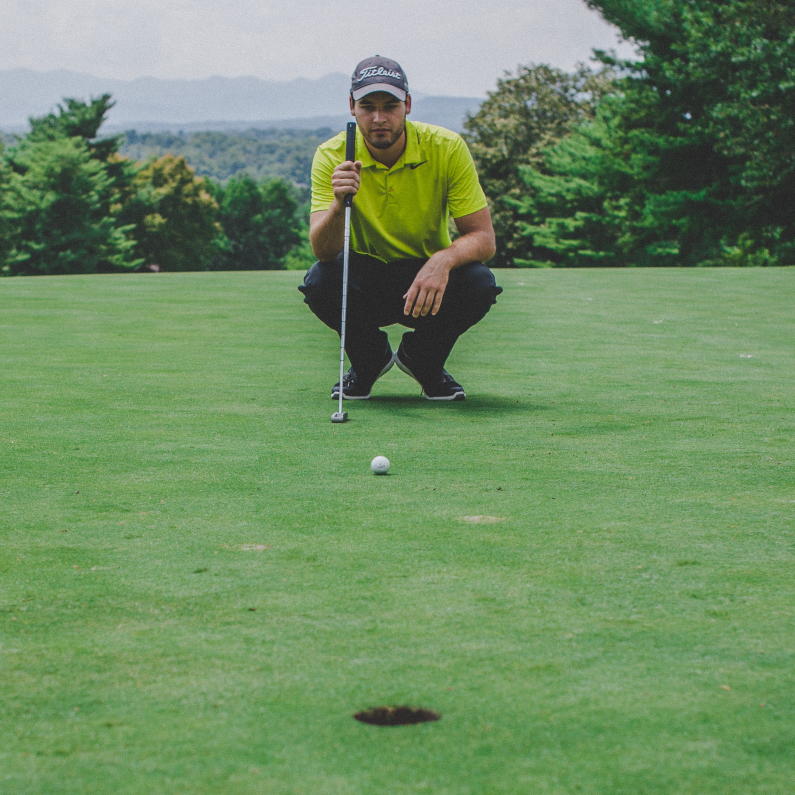

When are putters used?
Where they're used:
Typically it is best to use a putter when you're ball is
located on the green. The green has the shortest grass on the green and is also where the
hole is located.


Range of a putter:
Putters are typically used in short distance situations and it is said that the
maximum distance from the hole you should be to use a putter is somewhere between 50 to 60 feet.
Special cases:
There are however, some cases where a golfer may choose
to utilze their putter when they're off the green if it will give them the best chance of getting near the hole.

How do I use my putter?
How to grip a putter:
The most common putting grip is seen in the picture
to the right; however, it is best to hold the putter in a way that feels the most comfortable
while also maximizing your golfing skills.


Swinging a putter:
While holding the club make sure your arms and shoulder make and keep a triangle
shape throughout the swinging process. It's also important to make sure you use your wrists
and elbows to swing the putter rather than your arms.
Following through:
Use your wrist to pull the putter back, but when following through don't put any
force into your swing and just let your putter fall straight into the ball. Another pointer is to make sure to
hit the golf ball directly in the center upon contact.

How do I improve my putting?
Finding a putter:
One of the best ways to improve one's short game is by finding the equipment
that they feel the most comfortable using. Attached below is a link to an article by PGA which talks about the putter
buying process.
PGA Article


Knowing where to aim:
Another way to improve one's short game is by having the ability to visualize
where to aim your shot while on the green, by being able to master the ability to look over both the distance and
features of the ground around you will give you an strong advantage over your opponents.
Practice:
The best way to improve one's short game is by taking time to practice whether that be doing
putting drills or even playing through an actual game. One of the best ways to maximise your golf game is by mastering
putting due to the fact that most games can come down to who has the best short game.